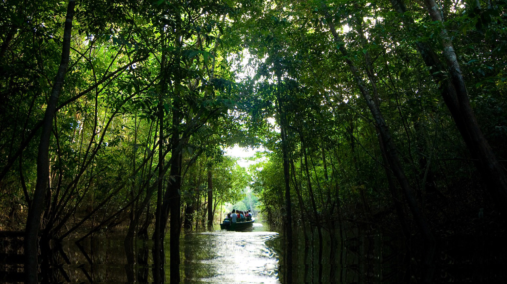
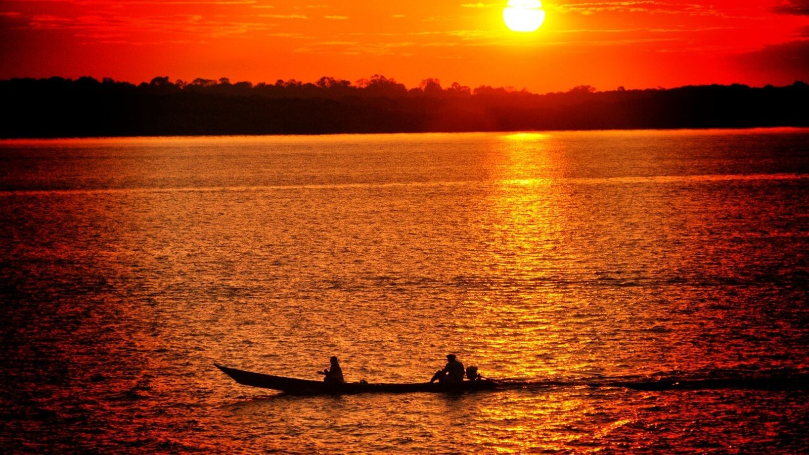

Um dia dois amigos decidem ir pescar, para onde vão ?s

Você arrumou suas tralhas para esse local, qual seu meio de transporte

Parabéns você chegou na Amazonia qual sua decisão...

Você e seu amigo chegam no Panatanal intactos e pescam, se divertem e você faz amizade com o pessoal da comitiva "TRAIA FRACA"
a aeronave cai e você e seu amigo morrem

No outro dia você acorda, e você e seu amigo enchem o barco de peixes

Você entrou na mata sozinho e bate de frente com uma onça pintada e morre...